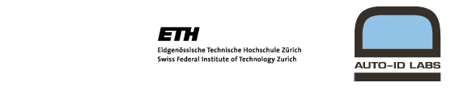

Fosstrak Components
About Fosstrak
- Background
- Success Stories
- Similar projects
- Publications
- Blog
- FAQ
- Contact
The Fosstrak project was initiated by Christian Floerkemeier, Matthias Lampe, and Christof Roduner of the Distributed Systems Group at ETH Zurich led by Friedemann Mattern and the Auto-ID Lab at ETH Zurich/University of St. Gallen led by Elgar Fleisch .
At the Auto-ID Lab and in the Distributed Systems Group at ETH Zurich, we started working on the EPC Network and RFID middleware as early as 2001 through our involvement with the Auto-ID Center, a research program headquartered at MIT to foster the adoption of RFID (more information about the Auto-ID Center). Our early contributions include for example the PML Core language, a mark-up language for Auto-ID events, which was published by EPCglobal in 2003, and the RFIDStack, an RFID middleware that abstracts from the idiosycracies of different reader devices.
In 2005, we decided to make the software packages that we developed over the years to abstract from proprietary reader interfaces, to filter and aggregate RFID data and to interpret the RFID data in a given context publicly available to the RFID community. To foster interoperability, we decided to wrap our existing implementations using the interfaces specified by the EPCglobal working groups, e.g., the reader protocol and EPCIS specification. The project was initially called Accada, but we changed the name to Fosstrak after a trademark dispute.
We believe that the availability of openly available software for an RFID infrastructure will benefit the entire community and accelerate the development of an "Internet of Things":
| Name | Organization | Module |
| Dominique Guinard | ETH Zurich | EPCIS Web Adapter |
| Mark Harrison | University of Cambridge | TDT Lead |
| Matthias Lampe | Zuehlke Engineering | ALE |
| Marc-Antoine Mouilleron | Orange | EPCIS, TDT |
| Benoit Plomion | Orange | ALE |
| Wafa Soubra | Orange | ALE |
| Marco Steybe | Zuehlke Engineering | EPCIS Lead |
| Samuel Wieland | ELCA | ALE, LLRP Commander |
| Marco Aurelio Barreto Silva | Fosstrak Brazil | |
| Thiago da Silva Menezes | Fosstrak Brazil |
| Name | Organization |
| James Brusey | University of Cambridge |
| Arthur van Dorp | ETH Zurich |
| Remo Egli | ETH Zurich |
| Ueli Etter | ETH Zurich |
| Andreas Fuerer | ETH Zurich |
| Andrea Groessbauer | ETH Zurich |
| David Gubler | ETH Zurich |
| Jonas Haller | ETH Zurich |
| Zhang Haoning | ETH Zurich |
| Nikos Kefalakis | Athens Information Technology |
| Adrien Laurence | University of Caen |
| Nektarios Leontiadis | |
| Mathias Mueller | University of Fribourg |
| Patrice Oehen | ETH Zurich |
| Alain Remund | ETH Zurich |
| Angelo Rosenfelder | ETH Zurich |
| Thomas Rudfoss | Telenor R&I |
| Oskar Saiz | |
| Roland Schneider | ETH Zurich |
| Stephen Tan | |
| Geir Vevle | |
| Markus Vitalini | ETH Zurich |
| Sean Wellington | |
| Oliver Zweifel | ETH Zurich |
You can find the mailing list for Fosstrak at http://groups.google.com/group/fosstrak.
We switched to the Google Groups mailing list in February 2012. Older postings are archived at the following locations:
| EPCIS users mailing list | http://sourceforge.net/mailarchive/forum.php?forum_name=accada-epcis-user |
| EPCIS developers mailing list | http://sourceforge.net/mailarchive/forum.php?forum_name=accada-epcis-developer |
| ALE mailing list | http://sourceforge.net/mailarchive/forum.php?forum_name=accada-ale-user |
| TDT mailing list | http://sourceforge.net/mailarchive/forum.php?forum=fosstrak-tdt-user |